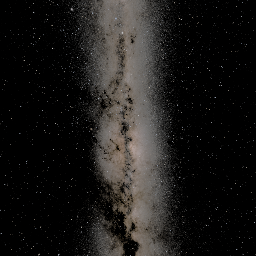
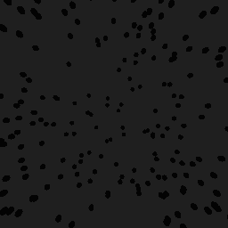

Pre-stimulus, stimulus and post-stimulus
The current sequenceConfig.json selects Examples/Swarm/heading-aligned.example.json in Swarm. Start it from Control: 10 seconds of heading observation with no agents, then 240 seconds with 100 Bogong moths per rig. The nested stimulus uses the frozen heading minus 90°, two-degree angular sizing and a volume that follows animal position. Your outer sequence settings remain unchanged; enabled phase durations govern the run.
One experimental file
An experiment can contain three phase objects. Each enabled object contains the full configuration normally used by that scene, plus enabled and durationSeconds. No extra files or sequence-level phase settings are needed. For example, this is a complete minimal Choice experiment:
{
"preStimulus": {
"enabled": true,
"durationSeconds": 240,
"resetPositionOnStart": true,
"resetRotationOnStart": true,
"randomInitialRotation": true,
"closedLoopOrientation": true,
"objects": [],
"headingReference": {
"enabled": true,
"startOffsetSeconds": 0,
"windowSeconds": 240
}
},
"stimulus": {
"enabled": true,
"durationSeconds": 240,
"resetPositionOnStart": false,
"resetRotationOnStart": false,
"closedLoopOrientation": true,
"objects": []
},
"postStimulus": { "enabled": false }
}Use the complete canonical template for every Choice setting, or the complete Selwyn terrain recipe for the sky, movement and swarm details omitted from the minimal example.
- Old flat JSON remains supported, with its existing scene schema and sequence timer. No phase keys means one stimulus. Existing fields do not need to move.
preStimulusandpostStimulusdefault off. Omit them, usenull,{}, or{ "enabled": false }. Disabled phase contents have no effect.stimulusdefaults enabled. A phased file requires an enabled stimulus with a positive finitedurationSeconds.- Each phase is a complete scene configuration, not a patch inherited from the previous phase. Repeat closed-loop, autopilot, sky and other settings you intend to retain. Omitted fields use that controller's existing defaults.
- The nested durations own the phased experiment's schedule. Keep outer sequence
durationequal to their total for readability; the Selwyn terrain example uses480. An overlong observation is shortened to fit; it never extends that total. Flat files still use sequencedurationas before. - Phases change conditions inside the current scene.
reloadScene: falseadditionally keeps the same scene when the outer sequence repeats. Set outerloop: trueto repeat the cycle. - Choice, Swarm, Kannadi, Optomotor and Dynamic Choice accept phase payloads. Dynamic Choice retains its design schema (
steps,intertrial, etc.) inside each phase and still usesparameters.design. Its inner trials/triggers restart when entering a new phase. - Mixing flat experiment settings with phase objects is rejected, avoiding silently ignored settings. Phase durations must be explicit; invalid settings appear in the status/error panel.
Independent pose resets
resetPositionOnStart and resetRotationOnStart both default true. They control the application of initialPosition and initialRotation at phase/experiment start. Random initial yaw applies when randomInitialRotation: true and rotation reset is enabled. Turning both resets off preserves the live transform and tracking integration.
| Position reset | Rotation reset | Effect |
|---|---|---|
| true | true | Start at the configured pose, using random yaw if requested. |
| true | false | Reset position while retaining current heading. |
| false | true | Keep position and apply initial/random heading. |
| false | false | Continue current position and heading. |
Choice uses its root initial pose. Swarm supports shared root initialPosition/initialRotation, with per-rig vrConfigs poses taking precedence. Kannadi retains its existing per-rig poses. The reset switches and random-yaw option are at the experiment root. Optomotor has optional root initial poses; omission preserves its historical pose behavior. Dynamic Choice uses the reset switches alongside initial pose in each design step/intertrial. The operator's R shortcut continues to work independently.
Nested standalone Swarm settings
Standalone Swarm accepts a phase's swarm object as well as its historical flat swarm fields. Nested swarm values override matching flat values; sky, autopilot, closed-loop gains, shared/per-rig poses and reset flags remain at the phase root. swarm: null clears the population for observation or post-stimulus phases. Omitting swarm retains flat-config behavior. A non-null swarm must be an object; malformed values raise a configuration error instead of falling back to the scene's locust prefab.
To render the procedural moth, set swarm.agentVisual: "Bogong" and swarm.bogongVisual.shape: "Moth". Omitting shape retains the historical dot default. The heading-aligned example uses a 10-second observation with no swarm, then a 240-second nested 100-moth stimulus. Its angular sizing, speed, volume, color and follow/reference flags remain explicit in that file. Moth dimensions and 30 Hz coupled flapping use the existing defaults when omitted.
worldUnitsPerMetre belongs to the swarm settings. If omitted, standalone Swarm retains its legacy centimetre scale (100 world units per metre), while terrain scenes resolve to metres. Adding a nested block or choosing a moth does not change the units of positions, speeds or volume sizes.
SwarmNestedConfigValidation.Run checks the actual ControlScene phase transition in an isolated Unity project, including an empty observation phase, the moth shader, per-rig heading alignment, system camera omissions, repeated disable/re-enable and legacy flat loading.
For the Selwyn terrain recipe, every cycle starts pre-stimulus at its configured initial position with random yaw. The transition from pre-stimulus to stimulus resets neither position nor rotation. Autopilot remains 7 world units/s, yaw remains closed loop, and AGL remains 100 throughout.
Heading measurement and application are separate
Place headingReference inside preStimulus. enabled defaults false, windowSeconds defaults 180 and startOffsetSeconds defaults zero. Disabled reference parameters have no effect. Enabled windows must be positive and finite; enabled offsets must be nonnegative and finite.
Measurement begins startOffsetSeconds after the pre-stimulus world has been configured. It takes one current virtual yaw sample per rendered frame during the following windowSeconds. Tracking, terrain, sky, configured objects and autopilot all continue. If offset + window exceeds pre-stimulus duration, the window is shortened to the remaining duration. The GUI shows a warning while retaining the requested JSON value. If it ends earlier, the result freezes while the rest of pre-stimulus continues. Samples from earlier cycles or the offset period are excluded.
Each rig independently computes atan2(mean(sin(yaw)), mean(cos(yaw))) and resultant length r. All headings count, including stationary headings and circling animals. There is no stability threshold and no resampling across stalled frames. This is a circular mean of virtual orientation, not velocity bearing or raw Kinefly wing input.
Every supported spawn configuration must explicitly select useHeadingReference: true to use that zero:
| Spawner | Flag location | Referenced quantities |
|---|---|---|
| Choice regular objects / bands | Each objects[] entry |
Position offsets and yaw; band direction and boundary rotation. |
| Swarm | Experiment/phase root | mu, spawn-center offset and spawn volume orientation. |
| Embedded Choice swarm | swarm.useHeadingReference |
Same Swarm quantities. |
| Kannadi | Experiment/phase root | Hex-grid offsets; mirrored animal rotations still follow the tracked animal. |
| Dynamic Choice | Each step's objects[] entry |
Position offset and spawned object yaw. |
Every flag defaults false, even when a heading was measured. An unavailable reference leaves authored directions and positions unchanged. With an available, opted-in reference, positions become offsets from the rig at onset; the rig itself is not rotated. Swarm also offers spawnRelativeToAnimal for relative placement independent of heading measurement. World directions remain frozen after spawning. Zero aligns with the mean, +90° is right/clockwise, and −90° is left. Choice bands retain their historical angle convention when opted out.
The old flat headingReference form remains readable: its observation now runs inside the sequence row duration, while the configured world remains visible. Explicitly opted-in spawners reapply the completed reference. Use phased files when pre-stimulus should have different conditions. Reset switches govern continuity explicitly; measurement no longer implicitly disables pose resets.
Selwyn stars → gray sky and leftward swarm
The Selwyn terrain reference file specifies:
- Pre-stimulus: 240 s, live Selwyn night-sky sample, terrain, no conspecifics, random initial yaw; measurement from offset 0 for 240 s.
- Stimulus: 240 s, the same terrain and continuous pose, uniform RGB
(0.12, 0.12, 0.12)sky; 256 dark Bogong dots per rig, RGB(0.01, 0.01, 0.01), constant 2° diameter, no blinking, fixed headingmean − 90°, speed 2 world units/s. - Dorsal placement: a 120 × 40 × 120 volume centered 50 units above each rig, so dots start 30–70 units above it. Periodic boundaries follow rig position, preserving the overhead population during flight; they do not follow its turns. Dots move in their fixed world direction and wrap at the volume edges.
- Post-stimulus: disabled. Outer sequence repeats the 480 s cycle without scene reload.
The chosen gray is a specified uniform value, not a measured average of the rendered star panorama. Set uniformSkyColor to an RGBA object to select another color, or null to disable it. It takes precedence over skyboxPath and nightSky. Unity creates and archives the uniform image; no image file needs to be supplied. A 2° dot subtends approximately 1.12 pixels at the center of a 64-pixel, 90° face, or 2.23 pixels at 128 pixels; actual raster coverage varies with position.
The sky remains static between 30-minute image updates; there is no continuous rotation/interpolation between bakes. A new cycle with localTime: "now" samples the current instant when the starry phase begins.
Records and monitoring
experimentPhase is recorded on every rig CSV row (also Optomotor, Swarm, Kannadi, Band and color-drift CSVs). Filter directly on preStimulus, stimulus or postStimulus; no event-log join is required. It is appended without repurposing existing step/blinking fields. See recorded data formats for idle/error/legacy values and a pandas example.
heading_reference.jsonl records each frozen mean, resultant, sample count and observation timestamps. For compatibility the completion fields remain named presentedAt / presentedUtc; these refer to measurement completion, which can precede stimulus onset. experiment_phases.jsonl records actual phase onsets, effective durations, trial/step, sky ID and each rig's frozen reference. Sky images/colors and usage remain in Skyboxes/.
Outbound telemetry retains topic matrex.telemetry.v1 and the six-component pose, input, gain/DC and error fields. system.phase reports preStimulus, stimulus or postStimulus for phased files (flat observations retain assessment); remainingPhaseSeconds gives the current phase countdown and remainingStepSeconds includes all remaining phases. The bottom-right panel shows both. Tab restores or hides the panel; a new error reopens it.
Other complete examples: offset + overrun + recovery, static → moving → static optomotor.
Validation: ExperimentPhaseValidation.Run exercises a shortened real Selwyn cycle with offset, overrun, enabled post and repeat. RunFull executes the actual 240 + 240 second recipe through the next cycle. PhaseAdapterValidation.Run also exercises nested pre/stimulus/post payloads in Swarm, Kannadi, Optomotor and Dynamic Choice. The Selwyn checks validate rendering, per-rig references, opt-in, retained scene/rig/terrain, continued motion, fixed stimulus heading, cleanup, telemetry and phase logs in a disposable Unity project. Hardware and display photometry remain bench measurements.
Rendered dorsal camera checks (256 × 256 capture; angular sizes are preserved at the configured panel resolution):


The saved validation report includes the full-duration run, final-source regressions and a standalone macOS build. The standalone smoke run received 452 ZMQ snapshots across four shortened cycles with four synthetic Kinefly publishers, four continuous pose transitions and no runtime errors.
References shared between sequence blocks
The current four-block Selwyn cycle uses four flat Choice files. Its Milky Way-only block sets headingReference.measureDuringPresentation: true, windowSeconds: 240 and saveAs: "milky-way-baseline". Measurement shares that 240-second row rather than adding another presentation period. Later swarm files set useHeadingReference: true, headingReferenceId: "milky-way-baseline", mu: 0 and reuse each rig's frozen result across blocks. Names are cleared each cycle. Scene duration is now a hard limit regardless of the retained concurrent-measurement flag. The preStimulus-only rule for phased assessment still applies. Core sequence validation rejects randomized or reordered named-reference dependencies.